Appendix 2: A mathematical summary of the RTM

The 4 economic freedoms
According to RTM the definition of freedom is “what can be achieved without harming oneself and others.” It is not therefore the result of creative thinking but can be demonstrated publically.
RTM defines four economic freedoms, which form the basis of his general approach and are:
The freedom of choice of his monetary system
Freedom to access resources
Freedom to evaluate and produce any economic value
Freedom to exchange and determine prices
Freedom 3 including establishes the principle of relativity as the essence of its approach.
Principle of economic relativity
The RTM is based on the principle of economic relativity, which states that every human being defines a legitimate frame of reference to estimate and produce any type of economic value, known or unknown by others.
In other words there is no absolute economic value, no human being who is legitimately able to define what is value or non-value for other human beings, nor in space (between present human beings) neither in time (between remote people over time).
Space-Time
The economic space-time is characterized mainly by humans who are part of a particular economic zone.
The following thought experiment helps to understand this point: if we remove from a given economic zone exceptional specific economic value, there will always be an economic zone. Conversely, if we remove humans, then there remains nor observer neither actor in this economic zone.
This is human who is the only invariant foundation of any economy.
However, humans are not absolute also, since they have an limited average lifetime “ev” (average life span), and renew in time, new-borns replacing deeds.
This dimension is a finite data of economic space-time considered by the RTM where, for all considered time t, all humans are renewed at time t+ev.
We call later “space” the whole individuals for a specific date “t”, and “time” the phenomenon of replacement succession of these individuals over time. The space-time must here be understood in relation to this definition.
Free Money
A money is a reference economic value that establishes a common metric for a given time and a given monetary area, allowing to measure in the same unit some values and trades, and to facilitate the flow of the economy between different actors.
Note that even though people do not agree on economic values neither in space nor in time, they still use the same unit of individual valuation, in relation to a reference value, which is named “the money”.
A monetary zone is defined by the set depending on time E(t) consisting of individuals I(x,t) that have adopted this same money (a monetary area may also include several moneys).
A money is then said to be “free” if it is a valid reference value for a metric that respects the principle of relativity of all economic value, as well as human space-time defined above, not establishing any arbitrary control (meaning the laws to be of the same form for all) of each other, mainly regarding the recognition and production of any economic value.
To be qualified as free a money cannot be based on an arbitrary decision about what is value or non-value, nor preferentially occurs for some human in space or in time.
It must be the accounting unit because it is the reference of the metric (as in relativistic physics, speeds are in proportion to the speed of light).
It must be an economic value anyway (just as light is a physical object), because we must have an economic metric. But to be independent from other values, its production cost should be minimal (the mass of the light is zero, that is precisely what gives it its invariance).
Therefore it should reconcile invariance and finiteness for the value, and minimal production. Human beings are the only invariant basis, it can be only a purely numerical value co-produced by humans, whose value is expressed relatively to its own sum.
We call 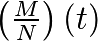 the money M average for the N life-limited humans taking part in this economy at time “t”.
Humans must all be co-producers of this same economic value, though they replace in time, so we must define a production of our reference value M, with same form for individuals, in space and time.
We then establish an economic metric whose reference value is generated in an invariant way by a frame of reference change (change of individual, regardless of the time in which he is born, lives and dies).
For each of N individuals I(x, t) of the currency area so established, under quasi-stability condition (especially of N), the instant relative production (differential) of a free currency, can only be the same in space (spatial symmetry) as well as the same in time (temporal symmetry).
In other words, it can not be production of free money that is not the same for every individual participant in this money for a given instant “t”, and this relative production is independent from time.
(1)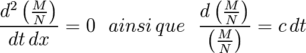
For the rest, and for conciseness reasons, we will omit the differential time “dt”, especially as dt = 1 when transforming into discrete calculations.
We deduce, placing us under assumption of continuity and differentiability, (see the chapter “Variations of N and calculation of UD”):
(2)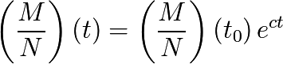
Moreover individuals with limited life “ev”, instantaneous production (derived) being established as invariant, individual relative sum produced during a life should not be either dependent on time.
The currency of those who go must give way to the currency of those who will replace them at the end of that period. Which is equivalent to saying that  years later, the living must have co-produced their own relative full share of currency:
years later, the living must have co-produced their own relative full share of currency:
(3)
This symmetrical principle between those who are leaving and those arriving establishes a convergence centre of symmetry at the point , where those who arrive at this point represent a proportion of 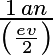 of those who go to see another expression, see also (14):
(4)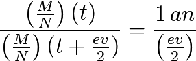
Hence it comes from (1) and (4) that we obtain a symmetric rate where the average  is reached for any individual, at approximately , at point of his participation in the free currency so established, whatever the considered period of time.
is reached for any individual, at approximately , at point of his participation in the free currency so established, whatever the considered period of time.
(5)
The rates “c” below  establish a metric favouring older individuals, while higher rates will reward younger people.
establish a metric favouring older individuals, while higher rates will reward younger people.
This convergence rate has a low limit 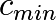 obtained for a convergence reached in the end of average life expectancy:
(6)
Numerical application for France with a life span “ev” of 80 years in 2014:
(7)
Quantitative
We call Universal Dividend differential invariant quantity at the time “t”, which we can describe either as continuous or discrete form (which will be useful to establish approximations of practical implementation):

Or:

Corresponding to monetary units co-created by individuals for the annual unit time “t”, which will be of the form:
(8)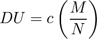
And Q(t) the sum of monetary units co-produced by an individual between the times 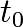 original date of participation to the metric and t:
(9)
This gives us graphically:

Relative
Given the above we also have the relative expression of the reference money of the global economic metric under the immutable form in the space-time:
(10)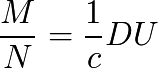
and
So we can also transform our metric in relative based on the relative unit “UD” so established. Now call  the number of units co-produced by an individual between and t:
the number of units co-produced by an individual between and t:
(11)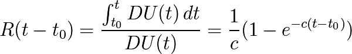
This gives us graphically:

In the relative frame of reference, the part of co-produced money by any individual participant of this metric converges asymptotically and consistently (in space-time) to:
(12)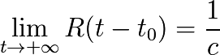
And in particular for 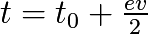 with 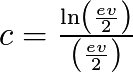:
(13)
Given (10), (11) and (13) , we can express the fundamental condition (4) in the form:
(14)
So we can express according to (14):
“The sum of UD produced by an individual participant in a free currency during  converges to the average monetary mass to near, whatever the individual and whatever the considered time.”
converges to the average monetary mass to near, whatever the individual and whatever the considered time.”
Or according to (13):
“The sum of the relative UD produced by an individual participant in a free currency during converges to 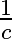 with near, whatever the individual and whatever the considered time.”
Relative graph of monetary part generated by an individual during and after his departure:

Initial asymmetries
Consider the special case of an individual starting its presence in the metric with an initial share of currency (gift, inheritance or any economic exchange)  and having balanced exchanges with the outside (the financial purchases being always equal to the monetary sales). This individual, we call pseudo-self, will see its share of currency 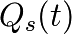 evolve as follows:
and having balanced exchanges with the outside (the financial purchases being always equal to the monetary sales). This individual, we call pseudo-self, will see its share of currency 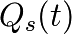 evolve as follows:
In quantitative:
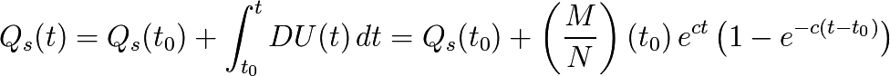
In relative we call  the evolution of its money share:
the evolution of its money share:

And we have:
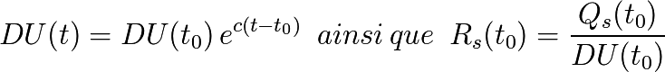
So we finally get by factoring the relative form:
(15)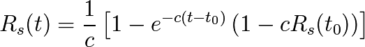
Where we see directly that if  which is equivalent to
which is equivalent to  , then for all “t” we have the equality
, then for all “t” we have the equality
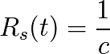
Now according to the three cases,  ,
,  or 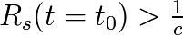, we have, on condition of balanced exchanges, the following three evolutions in the relative frame of reference:
or 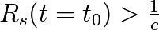, we have, on condition of balanced exchanges, the following three evolutions in the relative frame of reference:

This evolution is valid only in the specific case studied here.
The 4 frames of reference
We have seen above two frames of reference of relative and quantitative measures, whose transformation law is given by:
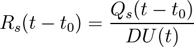
We can also establish the quantitative measure frame of reference to sum of zero accounts, by transformation:

Or the frame of reference on sum of zero accounts:
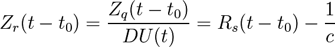
Everyone is perfectly able to take the frame of reference that seems most appropriate to him. One free monetary system can provide at least 4 separate frames of reference for any individual part, this choice is purely individual:
The quantitative frame of reference.
The quantitative frame of reference at sum zero.
The relative frame of reference.
The relative frame of reference at sum zero.
Variations for a pseudo-autonomous individual
Let us study here the variation of a monetary account for a pseudo-autonomous individual. First by quantitative:

By relative:

This allows us to affirm the conclusions completely equivalent (a) and (b):
(a) “In the quantitative frame of reference the account of a pseudo-autonomous individual appears as if it added a Universal Dividend between two units of time.”
(b) “In the relative frame of reference the account of a pseudo- autonomous individual appears as if between two units of time he added to it 1 Universal Dividend, and at the same time it absolve them a proportion equal to ‘c’ .”
Understanding that these points are only appearance, an individual participant in a free currency chooses the frame of reference of its choice for its monetary accounts, quantitative, relative, quantitative zero-sum, relative zero-sum, or ant other frame of reference it deems most consistent with his experience, this in no way affecting the free currency established.
Generalization and law of frame of reference change
By generalizing the previous reasoning, it is possible to establish on the basis of one fair money frames of reference changes, showing the money inside monetary masses of any growth, thus showing monetary subtractions, or at the opposite, to find the frame of reference where, a monetary system which appears as having any growth associated with a monetary substraction unconditionally redistributed, will appear as having no growth (frame of reference named in the RTM “relative”), or also without monetary substraction (frame of reference named in the RTM “quantitative”).
Given a fair money established in ![[R_{1},c_{1}]](_images/math/8c4ee93f9a1b7490eefba3a3a07df6fd203cad58.png) and its transformation in
and its transformation in ![[R_{2},c_{2}]](_images/math/4b051fde820370c001334e75a60230422aa9291f.png) , coinciding in 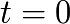 where
, coinciding in 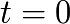 where  .
.
Since we are studying a change of frame of reference, let us note that for any t : 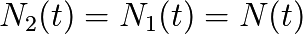, and besides that:
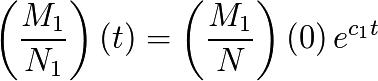
and
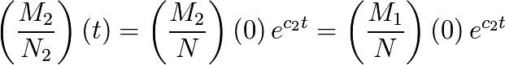
The law of transformation of 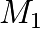 in  can be found (for example) by calculating beforehand “t” as , then by referring back to it in
can be found (for example) by calculating beforehand “t” as , then by referring back to it in
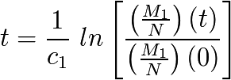
From what we deduce the transformation we were looking for :
(16)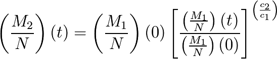
With the transformation established, applying to any monetary unit in a coherent way, and thus for any account we get the local transformation between  and
and  easily :
easily :
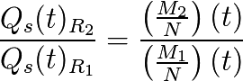
And then finally  is deduced directly from by :
is deduced directly from by :
(17)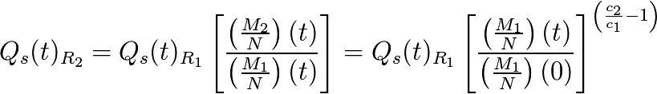
Now, let us calculate the variation between two units of time of an autonomous pseudo-account in :
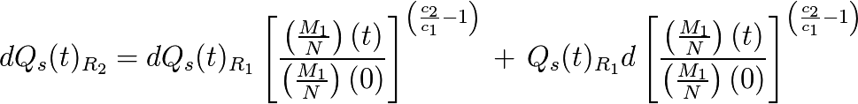
With

and
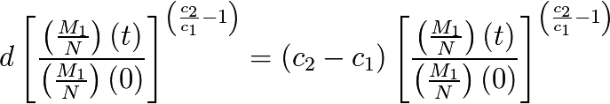
Taking into account that (16) and (17), we have :

Which can also be written under the form of :
(18)![dQ_s(t)_{R_{2}}=DU_{R_{2}} + (c_{1}-c_{2}) \left[\left(\frac{M_{2}}{N}\right)(t) - \, Q_s(t)_{R_{2}}\right]](_images/math/173fac2bed3a08fee6254decd4a7d6e432d2f3cc.png)
Let us recall here that
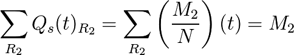
So, it appears in that the monetary system is acting “as if it was being taxed on every individual account 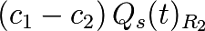 of money, unconditionally paid for every member equally  , to which is added
, to which is added  .
.
The transformation we have seen between these frame of reference, at the opposite, with any monetary growth rate 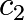 and any monetary subtraction rate unconditionally paid too  to find back the quantitative frame of reference of growth
to find back the quantitative frame of reference of growth  and of zero monetary subtraction, where the equivalent fair money appears as its sharp quantitative form.
and of zero monetary subtraction, where the equivalent fair money appears as its sharp quantitative form.
Let us note also that for each change in the frame of reference ![[R_{2},c_{2}=0]](_images/math/3458e0cbb8e884065a3d0f0364457c880d26f826.png) , we get:
, we get:

And with 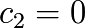 we have  which is then an arbitrary constant, that we can defined as equal to
which is then an arbitrary constant, that we can defined as equal to  , constant which does not change the calculation of the differential, and then we get :
, constant which does not change the calculation of the differential, and then we get :

Which is the form defined at the paragraph 9, therefore it is ignoring a constant factor, of the transformation of in this Relative frame of reference where monetary growth appears as null.
We established a General Low of Frame of Reference Change where one fair money appears as a arbitrary rate, associated to a tax rate and monetary redistribution defined. This one Law let us find back the underlying fair money of monetary system having this characteristic.
Another remarkable result is that, if we set  the quantity calculated in :
the quantity calculated in :  related to what is positively added on each account, they we will always have, for any :
related to what is positively added on each account, they we will always have, for any :
(19)
Which we can formulate as “the number of UD in the frame of reference is equal to the number of UBI in the frame of reference ”.
Theorem :
It exists then frames of references ![R_{[C_{x},x]}](_images/math/ddf0fcd4b4bd5a9ddcad1e7533c72625cda947ea.png) where
where  defines a growth rate,
defines a growth rate,  being a tax rate and unconditional redistribution, and as such 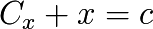, which are all equivalent and let us represent one same money, according to the Law of transformation previously established and a relativist invariant :
being a tax rate and unconditional redistribution, and as such 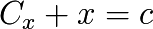, which are all equivalent and let us represent one same money, according to the Law of transformation previously established and a relativist invariant :
(20)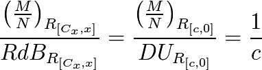
As discrete calculations
The implementation of a UD calculated on a discrete unit of time, require us to do the same calculations in a discrete mode, and not in a continuous mode, which makes a really small difference (smaller at smaller time step) that we need to take into account if we want to be really precise.
As discrete transformation, we will have :
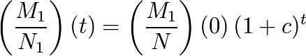
And thus:
![t = \frac{ln \left[ \frac{ \left(\frac{M_{1}}{N}\right)(t) }{ \left(\frac{M_{1}}{N}\right)(0)} \right]}{ln \left( 1+c \right)}](_images/math/c55597c2a63d9461f32becd3b3d7b9f79a08d6c6.png)
Which implies:
![\left(\frac{M_{2}}{N}\right)(t) = \left(\frac{M_{1}}{N}\right)(0) \left[ \frac{\left(\frac{M_{1}}{N}\right) (t)}{\left(\frac{M_{1}}{N}\right) (0)} \right]^{\left[ \frac{ln(1+c_{2})}{ln(1+{c_{1})}} \right] }](_images/math/2f7ad01715272b9548a3bdd9204090172adc60b4.png)
And thus:
(21)![Q_s(t)_{R_{2}} = Q_s(t)_{R_{1}} \left[ \frac{\left(\frac{M_{2}}{N}\right) (t)}{\left(\frac{M_{1}}{N}\right) (t)} \right] = Q_s(t)_{R_{1}} \left[ \frac{\left(\frac{M_{1}}{N}\right) (t)}{\left(\frac{M_{1}}{N}\right) (0)} \right]^{\left[ \frac{ln(1+c_{2})}{ln(1+{c_{1})}} - 1 \right]}](_images/math/9ee11b3f1a2fc899b02f4b3cdc4b3b06e8ae3f23.png)
Now we will retrieve the “tax rate” according only to the data already calculated from . This is necessary to be able to do in practice a frame of reference change simple and direct with only data from the fundamental frame of reference.
The reason is that in discrete calculation several options are possible depending on the data we take at a time “t” or at a time “t+1” to calculate the estimated differentials of a function.
In we will have the equality :
![DU_{R_{1}}(t) - \left[ Q_s(t+1)_{R_{1}} - Q_s(t)_{R_{1}} \right] = 0](_images/math/a031515b60d571db0f1c788edc43baa24a47d0a5.png)
Let us apply the transformation of  to
to  by multiplying by
by multiplying by ![\left[ \frac{\left(\frac{M_{2}}{N}\right) (t)}{\left(\frac{M_{1}}{N}\right) (t)} \right]](_images/math/95a97631c0358057e8e5729289a29eca030e2ea7.png) and by noting that 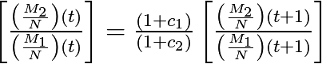, we get :
and by noting that 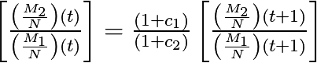, we get :
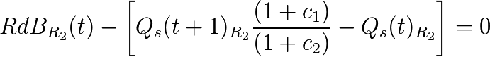
In monetary growth rate being the rate of the “appearing tax” equivalent is, as we saw earlier with the continuous calculation, the rate  , and the previous equation we retrieve this value from the exact calculation :
, and the previous equation we retrieve this value from the exact calculation :
(22)![c_{1}-c_{2} = (1+c_{2}) \, \left( \frac{RdB_{R_{2}}(t) - \left[ Q_s(t+1)_{R_{2}} - Q_s(t)_{R_{2}} \right]}{Q_s(t+1)_{R_{2}}} \right)](_images/math/e7b706af5108a100a5def81c7781c439aaee5e80.png)
All the right terms being already calculated by direct transformation from  .
.
We have a ratio calculated between values taken at the occurrence “t” and other at the occurrence “t+1” which is expected in the calculation of a discrete differential.
The presence of the factor  is not surprising since it is the expansion rate discrete of , which multiplied by the data “t” gives an approximation of the data in “t+1”. We should now understand that it produces a good intermediary value of the numerator between “t” and “t+1”.
is not surprising since it is the expansion rate discrete of , which multiplied by the data “t” gives an approximation of the data in “t+1”. We should now understand that it produces a good intermediary value of the numerator between “t” and “t+1”.
We have here the instantaneous calculation of the “apparent tax” in from data directly taken from , letting a display 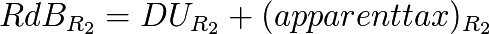.
Finally, by noting that 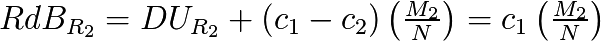 we can get the calculation of the apparent tax in discrete differential in the form of :
(23)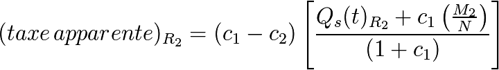
This form use again the tax rate  applied to the account increased of the UBI (targeting its value in “t+1”, without tax), and brought back to this value approximated in “t+1” to its value in “t” by the division by : 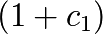.
applied to the account increased of the UBI (targeting its value in “t+1”, without tax), and brought back to this value approximated in “t+1” to its value in “t” by the division by : 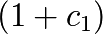.
We immediately note that when the account is worth the average, the theoretical tax is applied directly to the account without intermediary approximation.
Variations of N and calculation of UD
Given prior analyze, one should bear in mind that it’s the convergence of half life that is the target reached by a fair money, new entrants replacing dead human being (see about this the forms (4) et (14) concerning the time condition valid for any individual).
It is not a question, seeking a practical method for calculating the UD, to estimate by looking only at the local differential calculus. Keep in mind the fundamental operation of a free currency which is also to ensure for every human, during its life, especially in the center of time symmetry, in half-life, the same relative part of money as its predecessors and successors to the same point.
In particular, one should be convinced by thinking of the necessity to approach the practical solution by taking into consideration these extreme cases, as the one of the strongest growth of the number of members of a fair money (equivalent to a pseudo-initialization of the money), where the calculated UD in relative (  ) will suffer a huge discontinuity, destroying the continuity of the progression, and would become extremely low compared to initial fewer participants, and would own in this case a huge share of money compared to the new entrants, unrelated to the calculated UD.
) will suffer a huge discontinuity, destroying the continuity of the progression, and would become extremely low compared to initial fewer participants, and would own in this case a huge share of money compared to the new entrants, unrelated to the calculated UD.
In other words, more mathematically, the fundamental equations (1) and (4) analysis expressed in the form of a free currency, have no identified solutions only for  continuous and differentiable (or quasi-continuous and almost differentiable), so it will require to be closed as best as possible in case of discontinuous variations.
continuous and differentiable (or quasi-continuous and almost differentiable), so it will require to be closed as best as possible in case of discontinuous variations.
This reflection joins the need to have a UD(t = 0) not relative, because to establish a monetary proportion, it is still necessary that the currency exists first. We understand that in this case there will then be the convergence of phenomena between the initialization of a free currency and the huge increase in the number of members of an installed currency. The solution complies with the RMT, needed to be independent of time (principle of relativity), we now understand that we must in these cases establish a non-relative amount of UD(t), so a fixed amount and stable until the relative area is reached.
N(t) is unknown, so to assess the form of a general method of practical generation, we need a method simpler and more readable, we can approach via modeling of the variation of N in the form  or
or  and take an approximation for M according to
and take an approximation for M according to  .
.
One should note that :  must be understood as generally “small” in duration of the order of , et even before c. Indeed, on the experimental basis of France, between 1950 and 1990, population changed from 41 to 56 million, which corresponds to 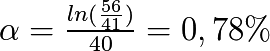/year whereas
must be understood as generally “small” in duration of the order of , et even before c. Indeed, on the experimental basis of France, between 1950 and 1990, population changed from 41 to 56 million, which corresponds to 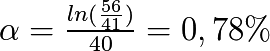/year whereas  /year.
/year.
We get an approximation of the differential variation in Dividend:
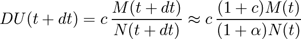
Hence we deduce a first form:
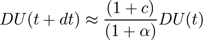
And a second form approximated to first order (“c” being small):

A simple lower bound appears for positive if 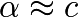 we have , and another simple lower bound appears for small and negative, that we are happy to find in this form, since it is very close to the definition: .
From these two minimum limits revealed by this approximation we can derive a simple practical calculation of UD, showing a quantitative form and another relative one, adapting flexibly to evolutions in N:
(24)
In particular it is recognized that for N stable, form will quickly converge to its fundamental relative expression (which is absolutely necessary):

This form is extremely convenient especially for the development of an independent free currency from scratch, but also equivalently to manage flexibly the unpredictable variations of N, while having an invariant distribution in space and time and without going away from the basic form.
Being simple, easy to understand, and reassuring from a quantitative point of view, this form seems the best that can be found.
We can summarize the operation as follows:
“The UD never drops in quantitative and is always at least equal to a relative proportion “c” of the monetary mass.”
Other forms are evidently possible given the uncertainty of N(t), the simplest forms being the bests…
In general, to ensure the relevance of this form, and possibly compare it with others, such as the trivial but dangerous theoretical form, which is only differential  , it is necessary to simulate any N(t) and then test different forms, just keeping in mind that it is for this, to place individuals of limited lifetime, simulating operations on larger periods than “ev”, and assess whether for all of these individuals the basic principles are respected, almost all the time.
, it is necessary to simulate any N(t) and then test different forms, just keeping in mind that it is for this, to place individuals of limited lifetime, simulating operations on larger periods than “ev”, and assess whether for all of these individuals the basic principles are respected, almost all the time.